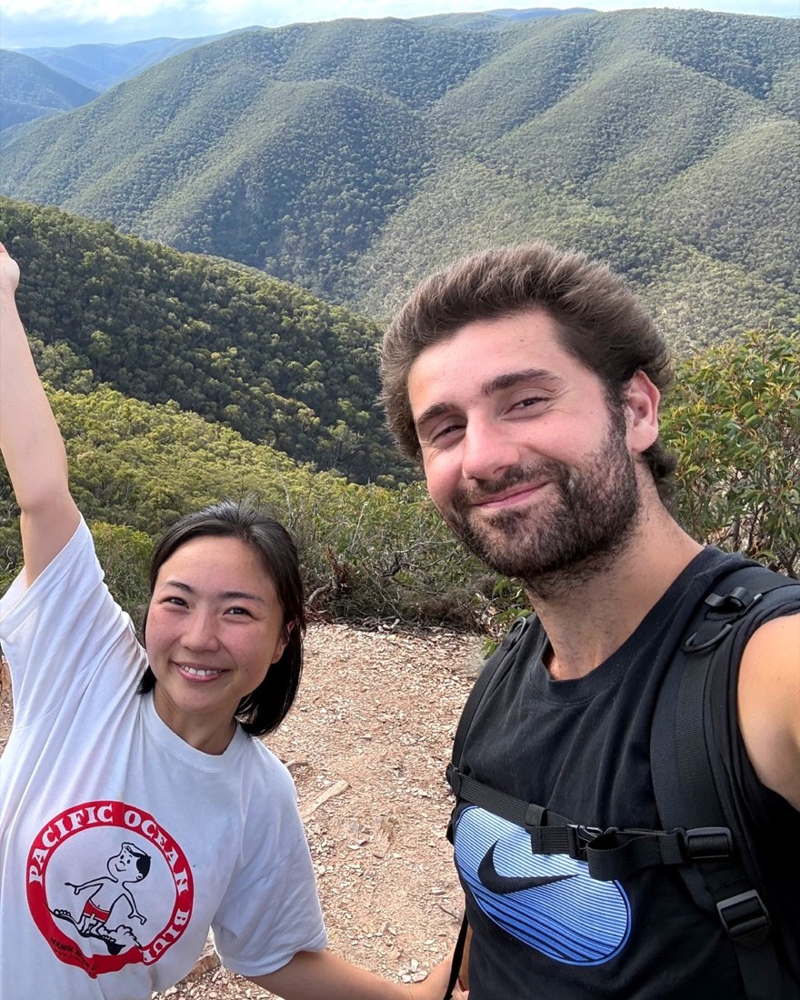

Independent science & technologyFounded in Melbourne · Global in scope
Independent science & technology company · Founded in Melbourne · Global in scope
We follow deep questions into useful things.
J & Co turns curiosity into products, ventures and collaborations—building technology that helps people understand more, do more and stay connected to what matters.
One venture direction, two physical prototypes and one research practice, separated by what kind of work they are and what exists now.
01 · Venture under review
One platform direction.
Research questions active · Not available
Platform under review
AI governance & control
Magpie Net
Magpie Net is investigating how organisations can retain clearer, inspectable control over which AI services may be used, what information may go where, who may spend what and how the organisation leaves.
RESEARCH QUESTIONS ACTIVE · NOT AN AVAILABLE PLATFORM SERVICE
Engineering render · Desk Sensor enclosure concept · Not a photograph
In development · Working prototype
Environmental measurement
Desk Sensor
A working two-node air-quality prototype: one for the desk and one designed for solar outdoor use, both feeding a local measurement and dashboard pipeline.
LOCAL DATA PIPELINE WORKING · ENCLOSURE AND RELIABILITY VALIDATION REMAIN
Engineering render · Kuuki Rev A lighting engine · Legacy AIRLAMP V1 PCB label · Not a photograph
In development · Working lighting prototype
Light, colour & future room sensing
Kuuki Lamp
A touch-controlled ambient lamp exploring colour, light and—later—understandable room-air sensing. Two PCB-based lighting prototypes are operating on desks and in real use. Their ambient effect is already useful; brightness, thermal validation, sensing and logging remain in development.
TWO WORKING LIGHTING PROTOTYPES · SENSING NOT YET INTEGRATED
Real data · PTB-XL record 1, lead II (Wagner et al., 2020) · PhysioNet, CC BY 4.0 · Not a diagnosis
Season 1 under way
Physiological-signal AI · Open data, open weights
Pertzel Lab
An independent research practice run by Jack, J & Co's founder. Season 1 asks one question: does a published ECG model keep its published score when someone outside its lab reruns it, and how much does it lose on surgery recordings it has never seen? One season at a time, with the code, the figures and the record published when the season ends, including what breaks. It reports what the data shows, never health advice.
TEN-RECORD SMOKE RUN COMPLETE · REPLICATION FROM WEEK 2 · NO ACCURACY CLAIM YET
Alongside our own work, we take on a small number of paid collaborations where privacy, measurement or a difficult technical system is central to the problem.
You do not need a finished brief. Tell us what you are trying to understand, change or build, what constraints matter and where you are stuck.
01
Privacy & AI governance
Clarify how tools, information, decisions and exit paths should work around a real organisational constraint.
02
Measurement & sensing
Prototype and test environmental or scientific measurement systems, stating clearly what the evidence can and cannot show.
03
Difficult technical systems
Make a complex software, hardware or data system tractable, then build the smallest useful next step.
03 · What guides usCuriosity · Freedom · Connection
Reality is more interesting than fantasy.
Look closely and the world is already stranger, deeper and more full of possibility than it first appears. That curiosity is where our work begins.
Technology, broadly understood
Capability can take many forms.
A useful technology might be a physical object, software, a system or a better way for people to connect. What matters is whether it expands real human capability.
Freedom without isolation
Freedom should deepen connection.
We want what we build to leave people with more choice, capability and room to grow—while remaining connected to themselves, their families and communities.
Wonder without opacity
Wonder without blind trust.
The best technology can feel like magic while giving people more understanding and control, not less.
PracticalVerifiableHonest about limitsHuman
04 · The people
The J and the Co.
Founders · Melbourne

Jack & Coco · Founders · Melbourne
Jack & Coco.
The J and the Co behind the company. J & Co Ventures was founded in Melbourne and is the home for the work on this page.
Jack leads the day-to-day work and replies to project enquiries personally.
Product questions, paid project enquiries and thoughtful collaborations are welcome. Tell us what you are trying to achieve, what makes it difficult and what would show that the work succeeded.